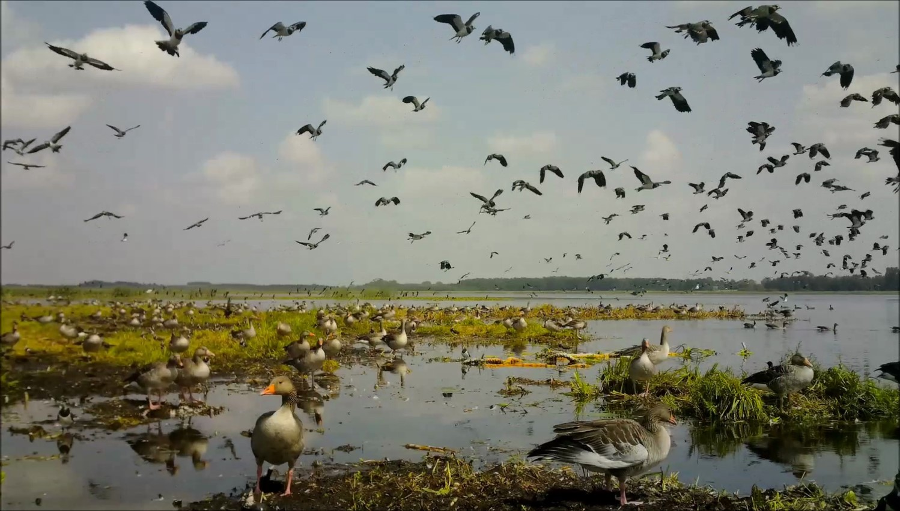

Rezervatai
Žuvinto biosferos rezervatas
Žuvinto biosferos rezervatas yra valstybės saugoma teritorija. Jis įsteigtas 2002 metais pirmojo Lietuvoje Žuvinto gamtinio rezervato (nuo 1937 m.) ir gretimų draustinių pagrindu.
Tai tarptautinės svarbos saugoma teritorija.
Žuvinto biosferos rezervato dalis saugoma kaip Ramsaro konvencijos („Konvencija dėl tarptautinės reikšmės šlapžemių, ypač vandens paukščių buveinių“) teritorija. Ramsaro duomenų bazėje: Žuvinto pelkė, WI Nr. 3LT004, plotas 7500 ha. Šis statusas Žuvinto pelkei suteiktas 1993 m.
Visas biosferos rezervatas nuo 2004 m. yra Europos Sąjungos vertingiausių gamtinių teritorijų tinklo Natura 2000 dalis: pagal Natūralių buveinių ir laukinės augalijos bei gyvūnijos direktyvą (92/43/EEB) Buveinių apsaugai svarbios teritorijos ribos sutampa su Žuvinto biosferos rezervato ribomis (išskyrus Daukšių žemės ūkio prioriteto funkcinę zoną) atitinka gamtinių buveinių apsaugai svarbių teritorijų atrankos kriterijus (Pavadinimas duomenų bazėje: Žuvinto ežeras ir Buktos miškas, LTALY005,18490 ha). Pagal Laukinių paukščių apsaugos direktyvą, paukščių apsaugai svarbios teritorijos - Žuvinto, Žaltyčio ir Amalvo pelkės LTALYB003, 14199 ha, ribos sutampa su Žuvinto biosferos rezervato ribomis.
2011 m. Žuvinto biosferos rezervatas įtrauktas į Pasaulinį UNESCO programos „Žmogus ir biosfera“ biosferos rezervatų tinklą. Tai pirmoji ir vienintelė Lietuvos vietovė Pasauliniame UNESCO biosferos rezervatų tinkle.
Žuvinto biosferos rezervatas yra Alytaus apskrities Alytaus ir Lazdijų rajonų savivaldybių bei Marijampolės apskrities Marijampolės savivaldybės teritorijose.
Kamanų valstybinis gamtinis rezervatas

„Kamanos yra vienas iš nedaugelio ne tik Lietuvos, bet ir Europoje dar mažai kultūros paliestas gamtos kampelis, išsaugojęs savo prigimties primityvumą“
Kazys Brundza, 1937
1979 m. birželio 29 d. Akmenės rajone Kamanų botaninio draustinio pagrindu įsteigtas Kamanų valstybinis rezervatas – 3660 ha bendro ploto. Aplink rezervatą sudaryta apsauginė zona, kuri sumažina ūkinės veiklos įtaką rezervatui – 1542 ha bendro ploto valstybiniuose ir ūkių miškuose. Tuo pačiu nutarimu patvirtinti rezervato nuostatai bei ribos. 1996 m. Kamanų rezervatas plečiamas Mažeikių miškų urėdijos sąskaita, teritorijoje, kuri ir prieš karą priklausė valstybei. Šiuo metu rezervato plotas yra 3935 ha, buferinė apsaugos zona – 2530 ha.
Viešvilės valstybinis gamtinis rezervatas

Nedaug mūsų šalyje išliko vietų su laukine, civilizacijos beveik nepaliesta gamta. Kone visi didieji pelkynai nusausinti, daugelyje kasamos durpės. Vargiai berasime ir didesnių upelių, kurie tekėtų vien tik miškinga ar pelkėta teritorija ir jų aukštupiai būtų nekanalizuoti. Kirvio neliestų miškų iš viso seniai nelikę. Stambioji gyvūnija gerokai nuskurdusi. Seniai nebėra taurų, tarpanų, lokių, kilniųjų erelių. Nykstančių rūšių sąrašas kaskart ilgėja.
Kad neprarastume dar likusio gamtos paveldo, kad taptume šiuolaikine išprususia ir gamta besirūpinančia visuomene, yra steigiamos įvairios saugomos gamtinės teritorijos. Rezervatas – griežčiausią apsaugos statusą turinti teritorija. Čia uždrausta bet kokia žmogaus ūkinė veikla. Tuo siekiama sudaryti sąlygas gamtai tvarkytis pačiai, kaip priešistoriniais laikais. Yra daugybė augalų, gyvūnų ir grybų rūšių, kurių išlikimui būtinas neliečiamas, trūnijančios medienos pilnas miškas ar paprasčiausia ramybė. Rezervatas tarnauja estetiniams, ekologinės pusiausvyros palaikymo ir praktiniams poreikiams. Daugelio gal būt nykstančių organizmų savybės iki šiol mokslo dar neatskleistos ir tebelaukia progos pasitarnauti mūsų poreikiams.
Viešvilės valstybinis gamtinis rezervatas jauniausias iš šiuo metu esančių keturių rezervatų Lietuvoje. Šiaurinė ir didžioji jo dalis yra Tauragės rajono pietiniame pakraštyje. Pietinė dalis siaura juosta įsiterpia į Jurbarko rajoną link Viešvilės miestelio. Dabartinis rezervato plotas – 3216 ha. Rezervatą juosia 2459 ha buferinės apsaugos zona. Rezervato paskirtis -išsaugoti natūralią Viešvilės baseino su Artosios, Gličio pelkėmis ir jas supančiais Karšuvos girios miškais ekosistemą Karšuvos žemumoje, taip pat tik jai būdingą ir retą augaliją bei gyvūniją, ypač - margųjų upėtakių nerštavietes Viešvilės upėje.
Viešvilės valstybinis gamtinis rezervatas yra Ramsaro ir NATURA 2000 teritorija.
Čepkelių valstybinis gamtinis rezervatas

Rezervatai – tai nedidelės natūralios gamtos salelės Lietuvoje (tik 0,4 % visos Lietuvos teritorijos), kurias žmogus sąmoningai paliko laukinei, nesukultūrintai, „nepatobulintai“ gamtai, kiek tai dar buvo įmanoma. Buvo nuspręsta šiose teritorijose ne tik nevykdyti jokios ūkinės veiklos, bet ir stipriai apriboti žmonių lankymąsi. Dabar rezervatų takeliais tevaikšto ir įvairius stebėjimus bei tyrimus atlieka mokslininkai, apsaugą vykdo inspektoriai, na, o kitiems lankytojams įrengiami mokomieji takai, kur visi, lydimi Rezervato darbuotojų gali pamatyti ir širdimi pajusti laukinės gamtos gyvenimą. Be Rezervatų direkcijos leidimo rezervatuose lankytis draudžiama.
1975 m pačiame pietiniame Lietuvos pakraštyje įkurtas Čepkelių valstybinis gamtinis rezervatas. 11 212 ha plote saugoma:
- didžiausias Lietuvoje natūralaus hidrologinio režimo Čepkelių pelkynas,
- vakaruose ir šiaurės vakaruose prie pelkės rymančios mišku, apaugusios žemyninės kopos,
- pelkes supantys miškai,
- šiems biotopams būdinga bei reta augalija, gyvūnija ir grybija, ekosistemų stabilumas.
Čepkelių teritorija svarbi ne tik Lietuvos mastu – 1993 m. Lietuvai prisijungus prie Ramsaro Konvencijos, Čepkeliai įtraukti į tarptautinę reikšmę turinčių Pelkinių vietovių sąrašą.